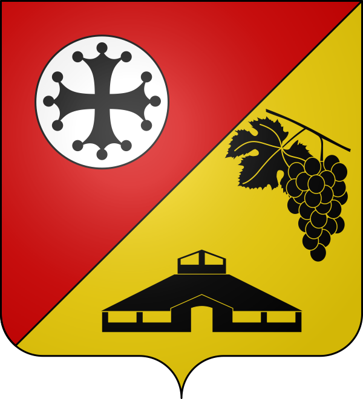

Bouloc
Le Bon Lieu
du Frontonnais


⟹ Négrette · Briques · Coteaux ⟸

Un « bon lieu » sur les coteaux. Le nom de Bouloc vient de l'occitan Bonlòc, formé de « bon » et « loc », le lieu : le « bon lieu », c'est-à-dire un endroit agréable et propice à l'installation. Le village occupe des coteaux qui culminent à 226 mètres, entre la vallée de la Garonne et celle du Tarn ; les ruisseaux de Magnanac et de Sayrac y prennent leur source avant de rejoindre le Tarn.
Une halte sur la route de Toulouse à Montauban. Située sur l'axe qui relie Toulouse au Quercy, la commune a accueilli des visiteurs illustres : selon la tradition locale, le pape Calixte II en 1119, puis Philippe le Bel en 1303. En 1565, le roi Charles IX y fait étape avec Catherine de Médicis et le chancelier Michel de L'Hospital, au cours du grand tour de France royal.
1632 : Louis XIII à Bouloc. Louis XIII passe à Bouloc le 30 octobre 1632, le jour même de l'exécution à Toulouse du duc Henri II de Montmorency, gouverneur du Languedoc, condamné pour s'être révolté contre le pouvoir royal. Cet épisode inscrit le village dans l'une des pages les plus dramatiques de l'histoire languedocienne.

Une terre du Languedoc. Bouloc a toujours été rattachée à Toulouse et au Languedoc, dont la croix figure sur ses armoiries. Le village appartient au Frontonnais, ce pays de terrasses caillouteuses entre Garonne et Tarn réputé pour ses vins et ses fruits.
XIXe siècle : l'apogée de la vigne. À la fin du XIXe siècle, le vignoble couvre jusqu'à 600 hectares sur la commune. La négrette fait la prospérité des familles boulocaines, avant que le phylloxéra ne ravage les vignes. Bouloc fait aujourd'hui partie de l'aire de l'AOC Fronton, et une grappe de raisin « aussi noire que la négrette » orne son blason.

Le temps des briqueteries. Plusieurs usines de briques et de tuiles ont marqué l'histoire de Bouloc, exploitant les argiles du Frontonnais pour fournir la brique foraine si caractéristique du pays toulousain. Le blason communal en garde le souvenir à travers la silhouette d'un four de cuisson, aujourd'hui disparu.
Du village à la ville. Petit village rural jusqu'au milieu du XXe siècle, Bouloc connaît depuis les années 1970 une forte croissance démographique, portée par la proximité de Toulouse, la périurbanisation et l'essor de la zone d'emplois d'Eurocentre. La commune appartient désormais à l'unité urbaine de Toulouse.

Le siège du Frontonnais. Bouloc accueille le siège de la communauté de communes du Frontonnais, qui fédère dix communes du nord toulousain autour du vignoble de Fronton. Forte de plus de cinquante associations, la commune est réputée pour la vitalité de sa vie associative.
Des armoiries qui racontent l'histoire. Le blason réunit la croix du Languedoc, la grappe de négrette et le four à briques, sur des couleurs rouge et or : le rouge du sang et du feu, l'or du soleil, deux couleurs éclatantes qui, ensemble, symbolisent le Midi.

Bouloc porte bien son nom : un « bon lieu » de coteaux, de vignes et de briques, devenu en quelques décennies l'un des cœurs vivants du Frontonnais sans perdre la mémoire de son terroir.
Repère synthétique — L'Âme des RégionsPour aller plus loin — sources et documentation :
• Mairie de Bouloc
• Communauté de communes du Frontonnais
• Retable de l'église Notre-Dame — base Palissy (POP)
• Archives départementales de la Haute-Garonne
• Haute-Garonne Tourisme — découvrir le nord toulousain
• INSEE — Bouloc
La mémoire de Bouloc est surtout celle de ses visiteurs illustres : le pape Calixte II, Philippe le Bel, Charles IX accompagné de Catherine de Médicis et de Michel de L'Hospital, puis Louis XIII, présent le jour de l'exécution du duc de Montmorency à Toulouse.
Vignerons, briquetiers et tuiliers ont façonné l'identité du village, que le blason communal résume en trois symboles : la croix du Languedoc, la grappe de négrette et le four à briques.
La vie associative est l'une des grandes fiertés locales : plus de cinquante associations animent la commune. L'association APOIRC organise plusieurs fois par an son « Salon musical » dominical à la salle des fêtes, et l'association « Les Amis de la Radio » fait vivre une webradio locale consacrée à la culture et au sport.
Accès : Bouloc se trouve à 20 km au nord de Toulouse, sur la RD4 qui mène à la Barrière de Paris. L'autoroute A62 est accessible par la sortie 10.1 (Eurocentre) ; la gare la plus proche est Castelnau-d'Estrétefonds. Les lignes Hop!301 et 351 relient la commune à Toulouse et à Villemur-sur-Tarn.
Office de tourisme : Les informations touristiques sont disponibles auprès de la mairie et de la communauté de communes du Frontonnais, dont le siège est à Bouloc, ainsi qu'à la Maison des vins de Fronton toute proche.
Conseil de visite : combinez la visite de l'église et du lavoir avec une découverte des domaines viticoles du Frontonnais et une balade dans les landes ; Fronton et Castelnau-d'Estrétefonds sont à quelques minutes.